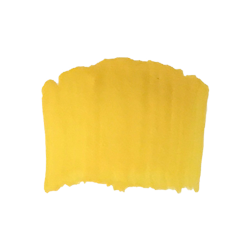

<DOCTYPE! html>
<html>
<head>
  <title>Fan</title>
  <style>
@import url('https://fonts.googleapis.com/css?family=Raleway:400,700');
</style>
  <meta name="viewport" content="width=device-width, initial-scale=1">
  <link rel="stylesheet" href="css7/style.css">
  <script src="https://code.jquery.com/jquery-1.12.4.js"></script>
  <script src="https://code.jquery.com/ui/1.12.1/jquery-ui.js"></script>
    <script src="js/script.js"></script>


    <div class="firstlink"> <div id="brush">
<p> <a href="index.html">Fan</a></p>
</div>

<a class="brushstroke1">

<span class="showdisplayonhover">
Fan Brush:
<span class="showbodyofdisplayonhover">
Natural hairs are good for smoothing, blending, and feathering. Synthetic hairs are better for textural effects, clouds, and leaves on trees. For acrylics, use strong and sturdy one, otherwise the hairs will clump when paint is added.                  
</span>
</span>
</a>

 <div class="brushstroke2">
 
 </div>

<div class="brushstroke3">
 
 </div>

<div class="brushstroke4">
 
 </div>

<div class="brushstroke5">
 
 </div>

<div class="brushstroke6">
 
 </div>

<div class="brushstroke7">
 
 </div>

 <div class="painting">
 
 </div>

 </html>